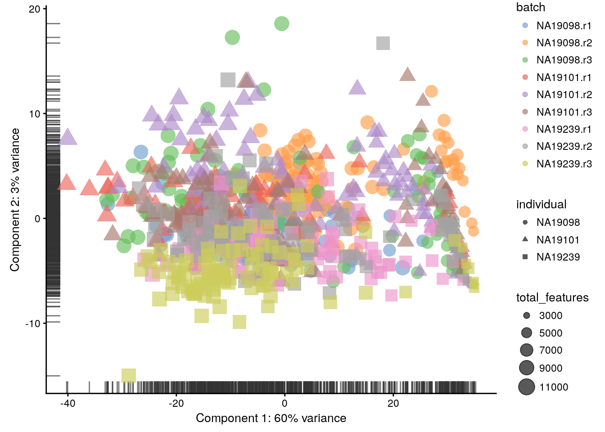
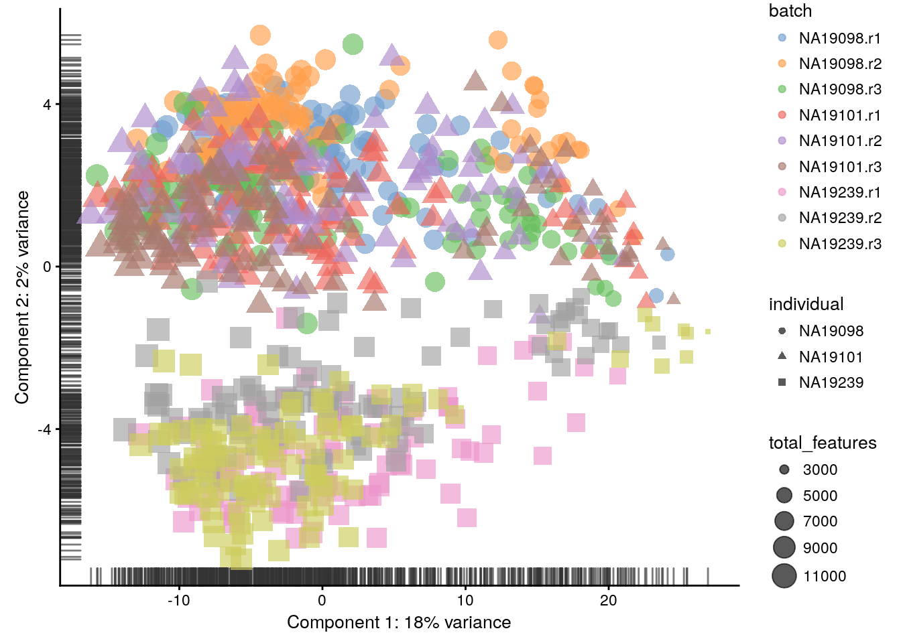
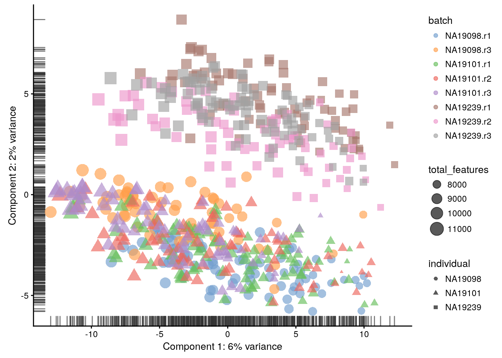
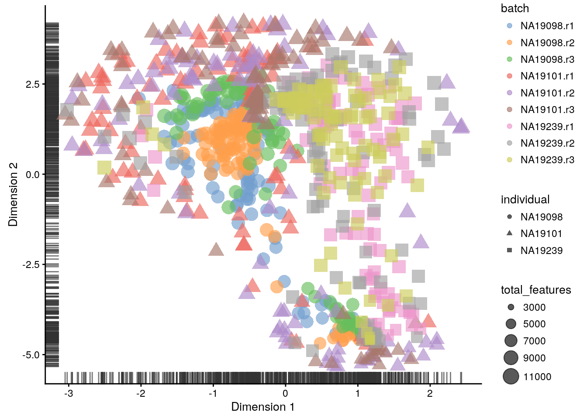
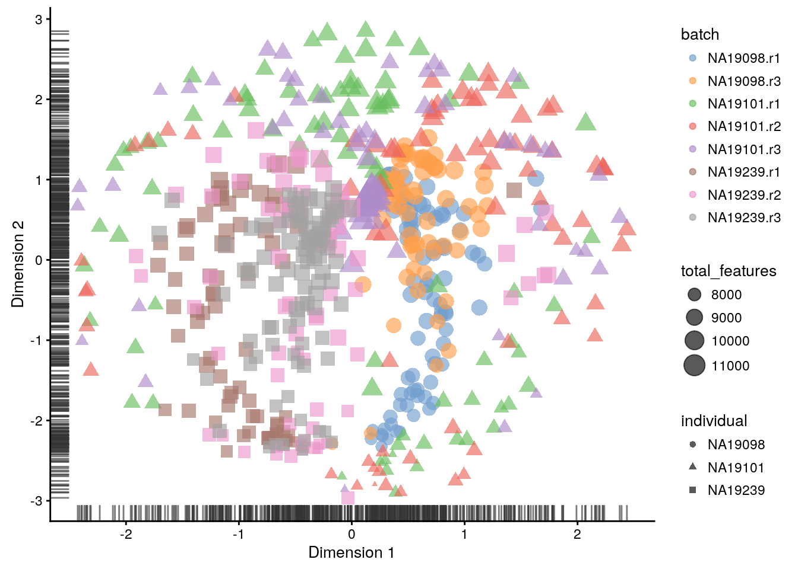
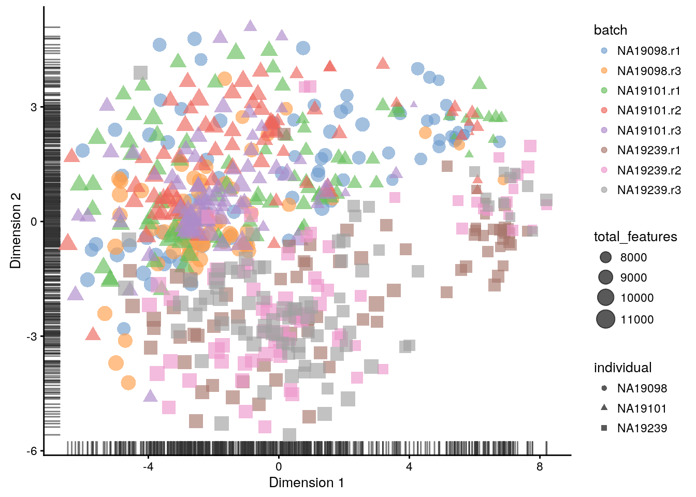
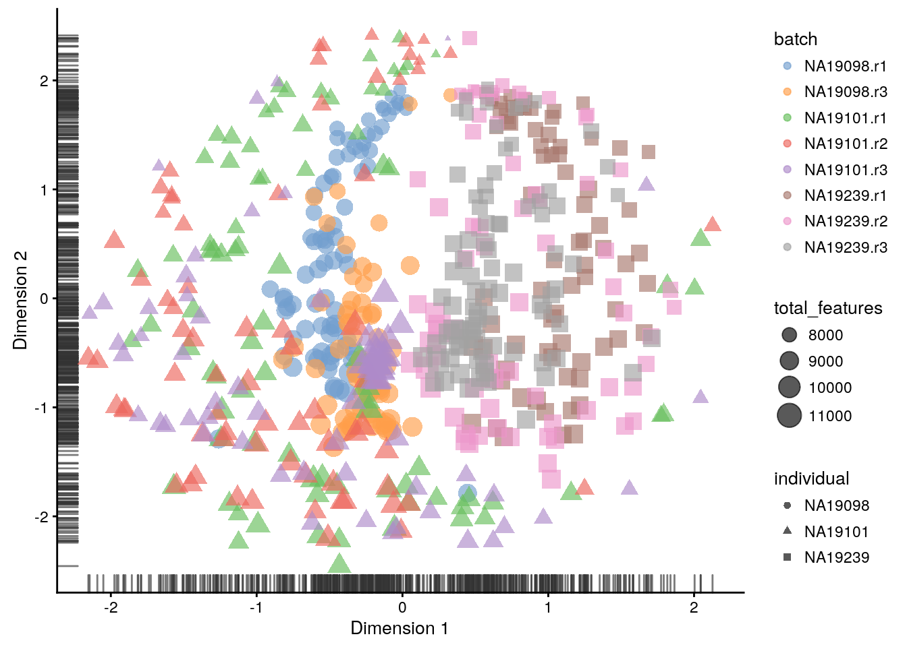

11 Data visualization (Reads)
library(scater, quietly = TRUE)
options(stringsAsFactors = FALSE)
reads <- readRDS("tung/reads.rds")
reads.qc <- reads[rowData(reads)$use, colData(reads)$use]
endog_genes <- !rowData(reads.qc)$is_feature_controlplotPCA(
reads[endog_genes, ],
exprs_values = "counts",
colour_by = "batch",
size_by = "total_features",
shape_by = "individual"
)

Figure 11.1: PCA plot of the tung data
plotPCA(
reads[endog_genes, ],
exprs_values = "log2_counts",
colour_by = "batch",
size_by = "total_features",
shape_by = "individual"
)

Figure 11.2: PCA plot of the tung data
plotPCA(
reads.qc[endog_genes, ],
exprs_values = "log2_counts",
colour_by = "batch",
size_by = "total_features",
shape_by = "individual"
)

Figure 11.3: PCA plot of the tung data
plotTSNE(
reads[endog_genes, ],
exprs_values = "log2_counts",
perplexity = 130,
colour_by = "batch",
size_by = "total_features",
shape_by = "individual",
rand_seed = 123456
)

Figure 11.4: tSNE map of the tung data
plotTSNE(
reads.qc[endog_genes, ],
exprs_values = "log2_counts",
perplexity = 130,
colour_by = "batch",
size_by = "total_features",
shape_by = "individual",
rand_seed = 123456
)

Figure 11.5: tSNE map of the tung data

Figure 10.9: tSNE map of the tung data (perplexity = 10)

Figure 10.10: tSNE map of the tung data (perplexity = 200)
11.1 sessionInfo()
## R version 3.4.2 (2017-09-28)
## Platform: x86_64-pc-linux-gnu (64-bit)
## Running under: Debian GNU/Linux buster/sid
##
## Matrix products: default
## BLAS: /usr/lib/x86_64-linux-gnu/blas/libblas.so.3.7.1
## LAPACK: /usr/lib/x86_64-linux-gnu/lapack/liblapack.so.3.7.1
##
## locale:
## [1] LC_CTYPE=en_US.UTF-8 LC_NUMERIC=C
## [3] LC_TIME=en_US.UTF-8 LC_COLLATE=en_US.UTF-8
## [5] LC_MONETARY=en_US.UTF-8 LC_MESSAGES=en_US.UTF-8
## [7] LC_PAPER=en_US.UTF-8 LC_NAME=C
## [9] LC_ADDRESS=C LC_TELEPHONE=C
## [11] LC_MEASUREMENT=en_US.UTF-8 LC_IDENTIFICATION=C
##
## attached base packages:
## [1] stats4 parallel methods stats graphics grDevices utils
## [8] datasets base
##
## other attached packages:
## [1] knitr_1.17 scater_1.5.19
## [3] SingleCellExperiment_0.99.4 SummarizedExperiment_1.6.5
## [5] DelayedArray_0.2.7 matrixStats_0.52.2
## [7] GenomicRanges_1.28.6 GenomeInfoDb_1.12.3
## [9] IRanges_2.10.5 S4Vectors_0.14.7
## [11] ggplot2_2.2.1 Biobase_2.36.2
## [13] BiocGenerics_0.22.1
##
## loaded via a namespace (and not attached):
## [1] viridis_0.4.0 edgeR_3.18.1
## [3] bit64_0.9-7 viridisLite_0.2.0
## [5] shiny_1.0.5 assertthat_0.2.0
## [7] highr_0.6 blob_1.1.0
## [9] GenomeInfoDbData_0.99.0 vipor_0.4.5
## [11] yaml_2.1.14 RSQLite_2.0
## [13] backports_1.1.1 lattice_0.20-35
## [15] glue_1.1.1 limma_3.32.10
## [17] digest_0.6.12 XVector_0.16.0
## [19] colorspace_1.3-2 cowplot_0.8.0
## [21] htmltools_0.3.6 httpuv_1.3.5
## [23] Matrix_1.2-11 plyr_1.8.4
## [25] XML_3.98-1.9 pkgconfig_2.0.1
## [27] biomaRt_2.32.1 bookdown_0.5
## [29] zlibbioc_1.22.0 xtable_1.8-2
## [31] scales_0.5.0 Rtsne_0.13
## [33] tibble_1.3.4 lazyeval_0.2.0
## [35] magrittr_1.5 mime_0.5
## [37] memoise_1.1.0 evaluate_0.10.1
## [39] beeswarm_0.2.3 shinydashboard_0.6.1
## [41] tools_3.4.2 data.table_1.10.4-2
## [43] stringr_1.2.0 munsell_0.4.3
## [45] locfit_1.5-9.1 AnnotationDbi_1.38.2
## [47] bindrcpp_0.2 compiler_3.4.2
## [49] rlang_0.1.2 rhdf5_2.20.0
## [51] grid_3.4.2 RCurl_1.95-4.8
## [53] tximport_1.4.0 rjson_0.2.15
## [55] labeling_0.3 bitops_1.0-6
## [57] rmarkdown_1.6 gtable_0.2.0
## [59] DBI_0.7 reshape2_1.4.2
## [61] R6_2.2.2 gridExtra_2.3
## [63] dplyr_0.7.4 bit_1.1-12
## [65] bindr_0.1 rprojroot_1.2
## [67] stringi_1.1.5 ggbeeswarm_0.6.0
## [69] Rcpp_0.12.13